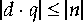

..., result
..., result| Contents | Prev | Next | Index | The JavaTM Virtual Machine Specification |
int to byte| i2b |
Description
The value on the top of the operand stack must be of type int. It is popped from the operand stack, truncated to a byte, then sign-extended to an int result. The result is pushed onto the operand stack.
Notes The i2b instruction performs a narrowing primitive conversion (§2.6.3). It may lose information about the overall magnitude of value. The result may also not have the same sign as value.
| i2c |
int to char
Description
The value on the top of the operand stack must be of type int. It is popped from the operand stack, truncated to char, then zero-extended to an int result. The result is pushed onto the operand stack.
Notes The i2c instruction performs a narrowing primitive conversion (§2.6.3). It may lose information about the overall magnitude of value. The result (which is always positive) may also not have the same sign as value.
int to double| i2d |
Stack
..., value ..., result.word1, result.word2
Description
The value on the top of the operand stack must be of type int. It is popped from the operand stack and converted to a double result. The result is pushed onto the operand stack.
Notes
The i2d instruction performs a widening primitive conversion (§2.6.2). Because all values of type int are exactly representable by type double, the conversion is exact.
int to float| i2f |
Description
The value on the top of the operand stack must be of type int. It is popped from the operand stack and converted to the float result using IEEE 754 round-to-nearest mode. The result is pushed onto the operand stack.
Notes
The i2f instruction performs a widening primitive conversion (§2.6.2), but may result in a loss of precision because type float has only 24 mantissa bits.
int to long| i2l |
Stack
..., value ..., result.word1, result.word2
Description
The value on the top of the operand stack must be of type int. It is popped from the operand stack and sign-extended to a long result. The result is pushed onto the operand stack.
Notes
The i2l instruction performs a widening primitive conversion (§2.6.2). Because all values of type int are exactly representable by type long, the conversion is exact.
| i2s |
int to short
Description
The value on the top of the operand stack must be of type int. It is popped from the operand stack, truncated to a short, then sign-extended to an int result. The result is pushed onto the operand stack.
Notes The i2s instruction performs a narrowing primitive conversion (§2.6.3). It may lose information about the overall magnitude of value. The result may also not have the same sign as value.
int| iadd |
Stack
..., value1, value2 ..., result
Description
Both value1 and value2 must be of type int. The values are popped from the operand stack. The int result is value1 + value2. The result is pushed onto the operand stack.
If an iadd overflows, then the result is the low-order bits of the true mathematical result in a sufficiently wide two's-complement format. If overflow occurs, then the sign of the result will not be the same as the sign of the mathematical sum of the two values.
int from array| iaload |
Stack
..., arrayref, index ..., value
Description
The arrayref must be of type reference and must refer to an array whose components are of type int. The index must be of type int. Both arrayref and index are popped from the operand stack. The int value in the component of the array at index is retrieved and pushed onto the top of the operand stack.
Runtime Exceptions
If arrayref is null, iaload throws a NullPointerException.
Otherwise, if index is not within the bounds of the array referenced by arrayref, the iaload instruction throws an ArrayIndexOutOfBoundsException.
int| iand |
Stack
..., value1, value2 ..., result
Description
Both value1 and value2 must be of type int. They are popped from the operand stack. An int result is calculated by taking the bitwise AND (conjunction) of value1 and value2. The result is pushed onto the operand stack.
int array| iastore |
Stack
..., arrayref, index, value ...
Description
The arrayref must be of type reference and must refer to an array whose components are of type int. Both index and value must be of type int. The arrayref, index, and value are popped from the operand stack. The int value is stored as the component of the array indexed by index.
Runtime Exceptions
If arrayref is null, iastore throws a NullPointerException.
Otherwise, if index is not within the bounds of the array referenced by arrayref, the iastore instruction throws an ArrayIndexOutOfBoundsException.
int constant| iconst_<i> |
Description
Push the int constant <i> (-1, 0, 1, 2, 3, 4 or 5) onto the operand stack.
Notes Each of this family of instructions is equivalent to bipush <i> for the respective value of <i>, except that the operand <i> is implicit.
int| idiv |
Stack
..., value1, value2 ..., result
Description
Both value1 and value2 must be of type int. The values are popped from the operand stack. The int result is the value of the Java expression value1 / value2. The result is pushed onto the operand stack.
An int division rounds towards 0; that is, the quotient produced for int values in n/d is an int value q whose magnitude is as large as possible while satisfying

. Moreover, q is positive when 
and n and d have the same sign, but q is negative when 
and n and d have opposite signs.
There is one special case that does not satisfy this rule: if the dividend is the negative integer of largest possible magnitude for the int type, and the divisor is -1, then overflow occurs, and the result is equal to the dividend. Despite the overflow, no exception is thrown in this case.
Runtime
Exception
If the value of the divisor in an int division is 0, idiv throws an ArithmeticException.
reference comparison succeeds| if_acmp<cond> | |
| branchbyte1 | |
| branchbyte2 |
Description
Both value1 and value2 must be of type reference. They are both popped from the operand stack and compared. The results of the comparison are as follows:
If the comparison succeeds, the unsigned branchbyte1 and branchbyte2 are used to construct a signed 16-bit offset, where the offset is calculated to be (branchbyte1 << 8) | branchbyte2. Execution then proceeds at that offset from the address of the opcode of this if_acmp<cond> instruction. The target address must be that of an opcode of an instruction within the method that contains this if_acmp<cond> instruction.
Otherwise, if the comparison fails, execution proceeds at the address of the instruction following this if_acmp<cond> instruction.
int comparison succeeds| if_icmp<cond> | |
| branchbyte1 | |
| branchbyte2 |
Description
Both value1 and value2 must be of type int. They are both popped from the operand stack and compared. All comparisons are signed. The results of the comparison are as follows:
 value2
value2
 value2
value2
Otherwise, execution proceeds at the address of the instruction following this if_icmp<cond> instruction.
int comparison with zero succeeds| if<cond> | |
| branchbyte1 | |
| branchbyte2 |
Description
The value must be of type int. It is popped from the operand stack and compared against zero. All comparisons are signed. The results of the comparisons are as follows:
0
0
Otherwise, execution proceeds at the address of the instruction following this if<cond> instruction.
reference not null| ifnonnull | |
| branchbyte1 | |
| branchbyte2 |
Description
The value must of type reference. It is popped from the oper-and stack. If value is not null, the unsigned branchbyte1 and branchbyte2 are used to construct a signed 16-bit offset, where the offset is calculated to be (branchbyte1 << 8) | branchbyte2. Execution then proceeds at that offset from the address of the opcode of this ifnonnull instruction. The target address must be that of an opcode of an instruction within the method that contains this ifnonnull instruction.
Otherwise, execution proceeds at the address of the instruction following this ifnonnull instruction.
reference is null| ifnull | |
| branchbyte1 | |
| branchbyte2 |
Description
The value must of type reference. It is popped from the operand stack. If value is null, the unsigned branchbyte1 and branchbyte2 are used to construct a signed 16-bit offset, where the offset is calculated to be (branchbyte1 << 8) | branchbyte2. Execution then proceeds at that offset from the address of the opcode of this ifnull instruction. The target address must be that of an opcode of an instruction within the method that contains this ifnull instruction.
Otherwise, execution proceeds at the address of the instruction following this ifnull instruction.
| iinc | |
| index | |
| const |
Description
The index is an unsigned byte that must be a valid index into the local variables of the current frame (§3.6). The const is a immediate signed byte. The local variable at index must contain an int. The value const is first sign-extended to an int, then the local variable at index is incremented by that amount.
Notes The iinc opcode can be used in conjunction with the wide instruction to access a local variable using a two-byte unsigned index and increment it by a two-byte immediate value.
int from local variable| iload | |
| index |
Description
The index is an unsigned byte that must be a valid index into the local variables of the current frame (§3.6). The local variable at index must contain an int. The value of the local variable at index is pushed onto the operand stack.
Notes The iload opcode can be used in conjunction with the wide instruction to access a local variable using a two-byte unsigned index.
int from local variable| iload_<n> |
Description
The <n> must be a valid index into the local variables of the current frame (§3.6). The local variable at <n> must contain an int. The value of the local variable at <n> is pushed onto the operand stack.
Notes Each of the iload_<n> instructions is the same as iload with an index of <n>, except that the operand <n> is implicit.
int| imul |
Stack
..., value1, value2 ..., result
Description
Both value1 and value2 must be of type int. The values are popped from the operand stack. The int result is value1 * value2. The result is pushed onto the operand stack.
If an int multiplication overflows, then the result is the low-order bits of the mathematical product as an int. If overflow occurs, then the sign of the result may not be the same as the sign of the mathematical product of the two values.
int| ineg |
Description
The value must be of type int. It is popped from the operand stack. The int result is the arithmetic negation of value, -value. The result is pushed onto the operand stack.
For int values, negation is the same as subtraction from zero. Because the Java Virtual Machine uses two's-complement representation for integers and the range of two's-complement values is not symmetric, the negation of the maximum negative int results in that same maximum negative number. Despite the fact that overflow has occurred, no exception is thrown.
For all int values x, -x equals (~x) + 1.
| instanceof | |
| indexbyte1 | |
| indexbyte2 |
Stack
..., objectref ..., result
Description
The objectref, which must be of type reference, is popped from the operand stack. The unsigned indexbyte1 and indexbyte2 are used to construct an index into the constant pool of the current class (§3.6), where the value of the index is (indexbyte1 << 8) | indexbyte2. The item at that index in the constant pool must be a CONSTANT_Class (§4.4.1), a symbolic reference to a class, array, or interface. The symbolic reference is resolved (§5.1).
If objectref is not null and is an instance of the resolved class, array, or interface, the instanceof instruction pushes an int result of 1 as an int on the operand stack. Otherwise, it pushes an int result of 0.
The following rules are used to determine whether an objectref that is not null is an instance of the resolved type: If S is the class of the object referred to by objectref and T is the resolved class, array, or interface type, instanceof determines whether objectref is an instance of T as follows:
[], that is, an array of components of type SC, then:
Object (§2.4.6).
[], that is, an array of components of type TC, then one of the following must be true:
Linking Exceptions
During resolution of the CONSTANT_Class constant pool item, any of the exceptions documented in §5.1 can be thrown.
Notes
The instanceof instruction is fundamentally very similar to the checkcast instruction. It differs in its treatment of null, its behavior when its test fails (checkcast throws an exception, instanceof pushes a result code), and its effect on the operand stack.
| invokeinterface | |
| indexbyte1 | |
| indexbyte2 | |
| nargs | |
| 0 |
Forms invokeinterface = 185 (0xb9)
Stack
..., objectref, [arg1, [arg2 ...]] ...
Description
The unsigned indexbyte1 and indexbyte2 are used to construct an index into the constant pool of the current class (§3.6), where the value of the index is (indexbyte1 << 8) | indexbyte2. The item at that index in the constant pool must have the tag CONSTANT_InterfaceMethodref (§4.4.2), a reference to an interface name, a method name, and the method's descriptor (§4.3.3). The constant pool item is resolved (§5.3). The interface method must not be <init>, an instance initialization method (§3.8), or <clinit>, a class or interface initialization method (§3.8).
The nargs operand is an unsigned byte which must not be zero. The objectref must be of type reference and must be followed on the operands stack by nargs - 1 words of arguments. The number of words of arguments and the type and order of the values they represent must be consistent with the descriptor of the selected interface method.
The method table of the class of the type of objectref is determined. If objectref is an array type, then the method table of class Object is used. The method table is searched for a method whose name and descriptor are identical to the name and descriptor of the resolved constant pool entry.
The result of the search is a method table entry, which includes a direct reference to the code for the interface method and the method's modifier information (see Table 4.4, "Method access and modifier flags"). The method table entry must be that of a public method.
If the method is synchronized, the monitor associated with objectref is acquired.
If the method is not native, the nargs - 1 words of arguments and objectref are popped from the operand stack. A new stack frame is created for the method being invoked, and objectref and the words of arguments are made the values of its first nargs local variables, with objectref in local variable 0, arg1 in local variable 1, and so on. The new stack frame is then made current, and the Java Virtual Machine pc is set to the opcode of the first instruction of the method to be invoked. Execution continues with the first instruction of the method.
If the method is native and the platform-dependent code that implements it has not yet been loaded and linked into the Java Virtual Machine, that is done. The nargs - 1 words of arguments and objectref are popped from the operand stack; the code that implements the method is invoked in an implementation-dependent manner.
Linking Exceptions
During resolution of the CONSTANT_InterfaceMethodref constant pool item, any of the exceptions documented in §5.3 can be thrown.
Otherwise, if no method matching the resolved name and descriptor can be found in the class of objectref, invokeinterface throws an IncompatibleClassChangeError.
Otherwise, if the selected method is a class (static) method, the invokeinterface instruction throws an IncompatibleClass-ChangeError.
public, invokeinterface throws an IllegalAccessError.
Otherwise, if the selected method is abstract, invokeinterface throws an AbstractMethodError.
Otherwise, if the selected method is native and the code that implements the method cannot be loaded or linked, invokeinterface throws an UnsatisfiedLinkError.
Runtime Exception
Otherwise, if objectref is null, the invokeinterface instruction throws a NullPointerException.
Notes Unlike invokevirtual, invokestatic, and invokespecial, the number of arguments words (nargs) for the method invocation is made available as an operand of the invokeinterface instruction. As with the other instructions, that value can also be derived from the descriptor of the selected method. The derived value must be identical to the value of the nargs operand. This redundancy is historical, but the nargs operand also reserves space in the instruction for an operand used by the invokeinterface_quick pseudo-instruction which may replace invokeinterface at run time. See Chapter 9, "An Optimization," for information on invokeinterface_quick.
The fourth operand byte of the invokeinterface instruction is unused by the instruction itself and must be zero. It exists only to reserve space for an additional operand added if the invokeinterface instruction is replaced by the invokeinterface_quick pseudo-instruction at run time.
| invokespecial | |
| indexbyte1 | |
| indexbyte2 |
Forms invokespecial = 183 (0xb7)
Stack
..., objectref, [arg1, [arg2 ...]] ...
Description
The unsigned indexbyte1 and indexbyte2 are used to construct an index into the constant pool of the current class (§3.6), where the value of the index is (indexbyte1 << 8) | indexbyte2. The item at that index in the constant pool must have the tag CONSTANT_Methodref (§4.4.2), a reference to a class name, a method name, and the method's descriptor (§4.3.3). The named method is resolved (§5.2). The descriptor of the resolved method must be identical to the descriptor of one of the methods of the resolved class.
Next, the Java Virtual Machine determines if all of the following conditions are true:
<init>, an instance initialization method (§3.8).
private method.
ACC_SUPER flag (see Table 4.1, "Class access and modifier flags") is set for the current class.
The resulting method must not be <clinit>, a class or interface initialization method (§3.8).
If the method is <init>, an instance initialization method (§3.8), then the method must only be invoked once on an uninitialized object, and before the first backward branch following the execution of the new instruction that allocated the object.
Finally, if the method is protected (§4.6), then it must be either a member of the current class or a member of a superclass of the current class, and the class of objectref must be either the current class or a subclass of the current class.
The constant pool entry representing the resolved method includes a direct reference to the code for the method, an unsigned byte nargs that must not be zero, and the method's modifier information (see Table 4.4, "Method access and modifier flags").
The objectref must be of type reference and must be followed on the operand stack by nargs - 1 words of arguments, where the number of words of arguments and the type and order of the values they represent must be consistent with the descriptor of the selected instance method.
If the method is synchronized, the monitor associated with objectref is acquired.
If the method is not native, the nargs - 1 words of arguments and objectref are popped from the operand stack. A new stack frame is created for the method being invoked, and objectref and the words of arguments are made the values of its first nargs local variables, with objectref in local variable 0, arg1 in local variable 1, and so on. The new stack frame is then made current, and the Java Virtual Machine pc is set to the opcode of the first instruction of the method to be invoked. Execution continues with the first instruction of the method.
If the method is native and the platform-dependent code that implements it has not yet been loaded and linked into the Java Virtual Machine, that is done. The nargs - 1 words of arguments and objectref are popped from the operand stack; the code that implements the method is invoked in an implementation-dependent manner.
Linking Exceptions
During resolution of the CONSTANT_Methodref constant pool item, any of the exceptions documented in §5.2 can be thrown.
Otherwise, if the specified method exists but is a class (static) method, the invokespecial instruction throws an IncompatibleClassChangeError.
Otherwise, if the specified method is abstract, invokespecial throws an AbstractMethodError.
Otherwise, if the specified method is native and the code that implements the method cannot be loaded or linked, invokespecial throws an UnsatisfiedLinkError.
Runtime Exception
Otherwise, if objectref is null, the invokespecial instruction throws a NullPointerException.
Notes
The difference between the invokespecial and the invokevirtual instructions is that invokevirtual invokes a method based on the class of the object. The invokespecial instruction is used to invoke instance initialization methods (<init>) as well as private methods and methods of a superclass of the current class.
The invokespecial instruction was named invokenonvirtual prior to Sun's JDK 1.0.2 release.
static) method| invokestatic | |
| indexbyte1 | |
| indexbyte2 |
Forms invokestatic = 184 (0xb8)
Stack
..., [arg1, [arg2 ...]] ...
Description
The unsigned indexbyte1 and indexbyte2 are used to construct an index into the constant pool of the current class (§3.6), where the value of the index is (indexbyte1 << 8) | indexbyte2. The item at that index in the constant pool must have the tag CONSTANT_Methodref (§4.4.2), a reference to a class name, a method name, and the method's descriptor (§4.3.3). The named method is resolved (§5.2). The descriptor of the resolved method must be identical to the descriptor of one of the methods of the resolved class. The method must not be <init>, an instance initialization method (§3.8), or <clinit>, a class or interface initialization method (§3.8). It must be static, and therefore cannot be abstract. Finally, if the method is protected (§4.6), then it must be either a member of the current class or a member of a superclass of the current class.
The constant pool entry representing the resolved method includes a direct reference to the code for the method, an unsigned byte nargs that may be zero, and the method's modifier information (see Table 4.4, "Method access and modifier flags").
The operand stack must contain nargs words of arguments, where the number of words of arguments and the type and order of the values they represent must be consistent with the descriptor of the resolved method.
If the method is synchronized, the monitor associated with the current class is acquired.
If the method is not native, the nargs words of arguments are popped from the operand stack. A new stack frame is created for the method being invoked, and the words of arguments are made the values of its first nargs local variables, with arg1 in local variable 0, arg2 in local variable 1, and so on. The new stack frame is then made current, and the Java Virtual Machine pc is set to the opcode of the first instruction of the method to be invoked. Execution continues with the first instruction of the method.
If the method is native, the nargs words of arguments are popped from the operand stack; the code that implements the method is invoked in an implementation-dependent manner.
Linking Exceptions
During resolution of the CONSTANT_Methodref constant pool item, any of the exceptions documented in §5.2 can be thrown.
Otherwise, if the specified method exists but is an instance method, the invokestatic instruction throws an IncompatibleClass-ChangeError.
Otherwise, if the specified method is native and the code that implements the method cannot be loaded or linked, invokestatic throws an UnsatisfiedLinkError.
| invokevirtual | |
| indexbyte1 | |
| indexbyte2 |
Forms invokevirtual = 182 (0xb6)
Stack
..., objectref, [arg1, [arg2 ...]] ...
Description
The unsigned indexbyte1 and indexbyte2 are used to construct an index into the constant pool of the current class (§3.6), where the value of the index is (indexbyte1 << 8) | indexbyte2. The item at that index in the constant pool must have the tag CONSTANT_Methodref (§4.4.2), a reference to a class name, a method name, and the method's descriptor (§4.3.3). The named method is resolved (§5.2). The descriptor of the resolved method must be identical to the descriptor of the one of the methods of the resolved class. The method must not be <init>, an instance initialization method (§3.8), or <clinit>, a class or interface initialization method (§3.8). Finally, if the method is protected (§4.6), then it must be either a member of the current class or a member of a superclass of the current class, and the class of objectref must be either the current class or a subclass of the current class.
The constant pool entry representing the resolved method includes an unsigned index into the method table of the resolved class and an unsigned byte nargs that must not be zero.
The objectref must be of type reference. The index is used as an index into the method table of the class of the type of objectref. If the objectref is an array type, then the method table of class Object is used. The table entry at that index includes a direct reference to the method's code and its modifier information (see Table 4.4, "Method access and modifier flags").
The objectref must be followed on the operand stack by nargs - 1 words of arguments, where the number of words of arguments and the type and order of the values they represent must be consistent with the descriptor of the selected instance method.
If the method is synchronized, the monitor associated with objectref is acquired.
If the method is not native, the nargs - 1 words of arguments and objectref are popped from the operand stack. A new stack frame is created for the method being invoked, and objectref and the words of arguments are made the values of its first nargs local variables, with objectref in local variable 0, arg1 in local variable 1, and so on. The new stack frame is then made current, and the Java Virtual Machine pc is set to the opcode of the first instruction of the method to be invoked. Execution continues with the first instruction of the method.
If the method is native and the platform-dependent code that implements it has not yet been loaded and linked into the Java Virtual Machine, that is done. The nargs - 1 words of arguments and objectref are popped from the operand stack; the code that implements the method is invoked in an implementation-dependent manner.
Linking Exceptions
During resolution of the CONSTANT_Methodref constant pool item, any of the exceptions documented in §5.2 can be thrown.
Otherwise, if the specified method exists but is a class (static) method, the invokevirtual instruction throws an Incompatible-Class-ChangeError.
Otherwise, if the specified method is abstract, invokevirtual throws an AbstractMethodError.
Otherwise, if the specified method is native and the code that implements the method cannot be loaded or linked, invokevirtual throws an UnsatisfiedLinkError.
Runtime Exception
Otherwise, if objectref is null, the invokevirtual instruction throws a NullPointerException.
int| ior |
Stack
..., value1, value2 ..., result
Description
Both value1 and value2 must both be of type int. They are popped from the operand stack. An int result is calculated by taking the bitwise inclusive OR of value1 and value2. The result is pushed onto the operand stack.
int| irem |
Stack
..., value1, value2 ..., result
Description
Both value1 and value2 must be of type int. The values are popped from the operand stack. The int result is value1 - (value1 / value2) * value2. The result is pushed onto the operand stack.
The result of the irem instruction is such that (a/b)*b + (a%b) is equal to a. This identity holds even in the special case that the dividend is the negative int of largest possible magnitude for its type and the divisor is -1 (the remainder is 0). It follows from this rule that the result of the remainder operation can be negative only if the dividend is negative and can be positive only if the dividend is positive. Moreover, the magnitude of the result is always less than the magnitude of the divisor.
Runtime Exception
If the value of the divisor for an int remainder operator is 0, irem throws an ArithmeticException.
int from method| ireturn |
Description
The returning method must have return type byte, short, char, or int. The value must be of type int. The value is popped from the operand stack of the current frame (§3.6) and pushed onto the operand stack of the frame of the invoker. Any other values on the operand stack of the current method are discarded. If the returning method is a synchronized method, the monitor acquired or re-entered on invocation of the method is released or exited (respectively) as if by execution of a monitorexit instruction.
The interpreter then returns control to the invoker of the method, reinstating the frame of the invoker.
int| ishl |
Stack
..., value1, value2 ..., result
Description
Both value1 and value2 must be of type int. The values are popped from the operand stack. An int result is calculated by shifting value1 left by s bit positions, where s is the value of the low five bits of value2. The result is pushed onto the operand stack.
Notes This is equivalent (even if overflow occurs) to multiplication by 2 to the power s. The shift distance actually used is always in the range 0 to 31, inclusive, as if value2 were subjected to a bitwise logical AND with the mask value 0x1f.
int| ishr |
Stack
..., value1, value2 ..., result
Description
Both value1 and value2 must be of type int. The values are popped from the operand stack. An int result is calculated by shifting value1 right by s bit positions, with sign extension, where s is the value of the low five bits of value2. The result is pushed onto the operand stack.
Notes
The resulting value is 
, where s is value2 & 0x1f. For nonnegative value1, this is equivalent to truncating int division by 2 to the power s. The shift distance actually used is always in the range 0 to 31, inclusive, as if value2 were subjected to a bitwise logical AND with the mask value 0x1f.
int into local variable| istore | |
| index |
Description
The index is an unsigned byte that must be a valid index into the local variables of the current frame (§3.6). The value on the top of the operand stack must be of type int. It is popped from the operand stack, and the value of the local variable at index is set to value.
Notes The istore opcode can be used in conjunction with the wide instruction to access a local variable using a two-byte unsigned index.
int into local variable| istore_<n> |
Description
The <n> must be a valid index into the local variables of the current frame (§3.6). The value on the top of the operand stack must be of type int. It is popped from the operand stack, and the value of the local variable at <n> is set to value.
Notes Each of the istore_<n> instructions is the same as istore with an index of <n>, except that the operand <n> is implicit.
int| isub |
Stack
..., value1, value2 ..., result
Description
Both value1 and value2 must be of type int. The values are popped from the operand stack. The int result is value1 - value2. The result is pushed onto the operand stack.
For int subtraction, a - b produces the same result as a + (-b). For int values, subtraction from zero is the same as negation.
Despite the fact that overflow or underflow may occur, in which case the result may have a different sign than the true mathematical result, execution of an isub instruction never throws a runtime exception.
| iushr |
int
Stack
..., value1, value2 ..., result
Description
Both value1 and value2 must be of type int. The values are popped from the operand stack. An int result is calculated by shifting value1 right by s bit positions, with zero extension, where s is the value of the low five bits of value2. The result is pushed onto the operand stack.
Notes
If value1 is positive and s is value2 & 0x1f, the result is the same as that of value1 \>\> s; if value1 is negative, the result is equal to the value of the expression (value1 \>\> s) + (2 << ~s). The addition of the (2 << ~s) term cancels out the propagated sign bit. The shift distance actually used is always in the range 0 to 31, inclusive.
int| ixor |
Stack
..., value1, value2 ..., result
Description
Both value1 and value2 must both be of type int. They are popped from the operand stack. An int result is calculated by taking the bitwise exclusive OR of value1 and value2. The result is pushed onto the operand stack.
| jsr | |
| branchbyte1 | |
| branchbyte2 |
Description
The address of the opcode of the instruction immediately following this jsr instruction is pushed onto the operand stack as a value of type returnAddress. The unsigned branchbyte1 and branchbyte2 are used to construct a signed 16-bit offset, where the offset is (branchbyte1 << 8) | branchbyte2. Execution proceeds at that offset from the address of this jsr instruction. The target address must be that of an opcode of an instruction within the method that contains this jsr instruction.
Notes
The jsr instruction is used with the ret instruction in the implementation of the finally clauses of the Java language (see Section 7.13, "Compiling finally"). Note that jsr pushes the address onto the stack and ret gets it out of a local variable. This asymmetry is intentional.
| jsr_w | |
| branchbyte1 | |
| branchbyte2 | |
| branchbyte3 | |
| branchbyte4 |
Description
The address of the opcode of the instruction immediately following this jsr_w instruction is pushed onto the operand stack as a value of type returnAddress. The unsigned branchbyte1, branchbyte2, branchbyte3, and branchbyte4 are used to construct a signed 32-bit offset, where the offset is (branchbyte1 << 24) | (branchbyte2 << 16) | (branchbyte3 << 8) | branchbyte4. Execution proceeds at that offset from the address of this jsr_w instruction. The target address must be that of an opcode of an instruction within the method that contains this jsr_w instruction.
Notes
The jsr_w instruction is used with the ret instruction in the implementation of the finally clauses of the Java language (see Section 7.13, "Compiling finally"). Note that jsr_w pushes the address onto the stack and ret gets it out of a local variable. This asymmetry is intentional.
Although the jsr_w instruction has a 4-byte branch offset, other factors limit the size of a Java method to 65535 bytes (§4.10). This limit may be raised in a future release of the Java Virtual Machine.
Contents | Prev | Next | Index
Java Virtual Machine Specification
Copyright © 1996, 1997 Sun Microsystems, Inc.
All rights reserved
Please send any comments or corrections to jvm@java.sun.com